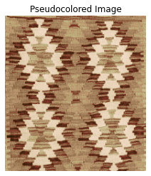

Chapter 4: Color Image Processing#
This is the companion file for Chapter 4.
Video 4.1: The Physics and Psychology of Color#

Video: The Physics and Psychology of Colour - Andrew Hanson.
Video 4.2: What is Color?#

Video: “What is color?” from Khan Academy.
Video 4.3: Color Spectrum?#

Video: Color Spectrum.
Video 4.4: How does the brain generate color?#

Video: How does the brain generate color?
Programming exercise 4.1:#
Run the following code to see red, green, and blue channel representations of the sample image.
Observe the effect of adding (and subtracting) and image to (from) itself after a slight shift.
# Import necessary libraries for image processing and visualization
from skimage import io, color
import matplotlib.pyplot as plt
import numpy as np
import urllib.request
# Download the image from the specified URL
url = "https://raw.githubusercontent.com/itironal/466Companion/main/images/odtu.jpg"
urllib.request.urlretrieve(url, "images/odtu.jpg")
# Read the downloaded image using skimage's io module
img1 = io.imread("images/odtu.jpg")
# Create a blank image of the same shape as img1, filled with white (255)
img2 = 255 * np.ones((img1.shape[0], img1.shape[1], img1.shape[2])).astype('int')
# Place img1 shifted by 20 pixels down and to the right into img2, leaving a border
img2[0:-20, 0:-20, :] = img1[20:, 20:, :]
# Visualize different channels of an image
plt.figure(figsize=(16, 6))
# Display the original RGB image
plt.subplot(141)
plt.imshow(img1)
plt.title('RGB Image')
plt.axis('off')
# Display the Red channel of the image
plt.subplot(142)
plt.imshow(img1[:, :, 0], cmap='gray')
plt.title('Red Channel')
plt.axis('off')
# Display the Green channel of the image
plt.subplot(143)
plt.imshow(img1[:, :, 1], cmap='gray')
plt.title('Green Channel')
plt.axis('off')
# Display the Blue channel of the image
plt.subplot(144)
plt.imshow(img1[:, :, 2], cmap='gray')
plt.title('Blue Channel')
plt.axis('off')
# Create a new figure for image addition and subtraction
plt.figure(figsize=(8, 6))
# Image addition: combine img1 and img2
img3 = img1.astype(float) + img2.astype(float)
# Normalize the result to the range [0, 1]
img3 = (img3 - img3.min()) / (img3.max() - img3.min())
# Display the result of image addition
plt.subplot(1, 2, 1)
plt.imshow((img3 * 255).astype(np.uint8)) # Convert back to uint8 for display
plt.title('Image Addition')
plt.axis('off')
# Image subtraction: subtract img2 from img1
img3 = img1.astype(float) - img2.astype(float)
# Normalize the result to the range [0, 1]
img3 = (img3 - img3.min()) / (img3.max() - img3.min())
# Display the result of image subtraction
plt.subplot(1, 2, 2)
plt.imshow(img3)
plt.title('Image Subtraction')
plt.axis('off')
(-0.5, 1426.5, 738.5, -0.5)
Programming exercise 4.2:#
Run the following code to see hue, saturation, and intensity channels of the sample image.
# Convert RGB image to HSI image and visualize hue, saturation, intensity channels
from skimage import io, color
import matplotlib.pyplot as plt
import numpy as np
# Download the image from the specified URL
url = "https://raw.githubusercontent.com/itironal/466Companion/main/images/odtu.jpg"
urllib.request.urlretrieve(url, "images/odtu.jpg")
# Read the downloaded image using skimage's io module
img1 = io.imread("images/odtu.jpg")
img_hsi = color.rgb2hsv(img1)
plt.figure(figsize=(20,8))
plt.subplot(151)
plt.imshow(img1)
plt.title('RGB Image');
plt.axis('off');
plt.subplot(152)
plt.imshow(img_hsi)
plt.title('HSI Image');
plt.axis('off');
plt.subplot(153)
plt.imshow(img_hsi[:,:,0],cmap='gray');
plt.title('Hue Channel');
plt.axis('off');
plt.subplot(154)
plt.imshow(img_hsi[:,:,1],cmap='gray');
plt.title('Saturation Channel');
plt.axis('off');
plt.subplot(155)
plt.imshow(img_hsi[:,:,2],cmap='gray');
plt.title('Intensity Channel');
plt.axis('off');
#Pseudocoloring code
import cv2
import numpy as np
import matplotlib.pyplot as plt
# Download the images from the specified URL
url = "https://raw.githubusercontent.com/itironal/466Companion/main/images/cropped_kilim_image.png"
urllib.request.urlretrieve(url, "images/cropped_kilim_image.png")
# --- FILE NAMES ---
gray_image_filename = "images/cropped_kilim_image.png" # grayscale input
color_image_filename = "images/redmushroom_long.png" # color source image
# --- READ IMAGES ---
gray_img = cv2.imread(gray_image_filename, cv2.IMREAD_GRAYSCALE)
color_img_bgr = cv2.imread(color_image_filename)
if gray_img is None or color_img_bgr is None:
raise FileNotFoundError("Could not load input images.")
# Convert color image from BGR to RGB
color_img = cv2.cvtColor(color_img_bgr, cv2.COLOR_BGR2RGB)
# --- CREATE PALETTE USING LUMINANCE ---
weights = np.array([0.2989, 0.5870, 0.1140]) # luminance weights for RGB
palette = np.zeros((256, 3), dtype=np.float32)
counts = np.zeros(256, dtype=np.int32)
# Calculate luminance per pixel and accumulate colors
luminance_img = (color_img @ weights).astype(np.uint8) # shape (H,W)
for i in range(color_img.shape[0]):
for j in range(color_img.shape[1]):
lum = luminance_img[i, j]
palette[lum] += color_img[i, j]
counts[lum] += 1
# Average accumulated colors for each luminance value
for i in range(256):
if counts[i] > 0:
palette[i] /= counts[i]
# --- FILL MISSING PALETTE ENTRIES BY LINEAR INTERPOLATION ---
def fill_palette(palette):
filled = palette.copy()
known_indices = np.where(np.any(palette != 0, axis=1))[0]
# Fill start to first known
filled[:known_indices[0]] = palette[known_indices[0]]
# Fill between known points
for k in range(len(known_indices) - 1):
start, end = known_indices[k], known_indices[k+1]
for idx in range(start+1, end):
ratio = (idx - start) / (end - start)
filled[idx] = (1 - ratio) * palette[start] + ratio * palette[end]
# Fill last known to end
filled[known_indices[-1]:] = palette[known_indices[-1]]
return filled
palette_filled = fill_palette(palette)
# --- APPLY PALETTE TO GRAYSCALE IMAGE ---
h, w = gray_img.shape
colored_img = np.zeros((h, w, 3), dtype=np.uint8)
for i in range(h):
for j in range(w):
val = gray_img[i, j]
colored_img[i, j] = np.clip(palette_filled[val], 0, 255)
plt.imshow(colored_img)
plt.axis('off') # Hide axis
plt.title("Pseudocolored Image")
plt.show()
